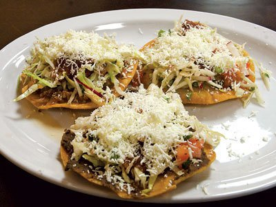

Enchiladas

Ingredientes Picadillo:
- 1/2-Libra de carne de Res cocida
- 3-Ajos machacados
- 1-Una cebolla finamente picada
- 1-Chile verde finamente picado
- 1-Cucharada de alcaparas
- 1-cucharada de vino blanco
- 1-cucharada de salsa inglesa
- 1-cucharada de pasta de tomate
- 2-onzas de mantequilla
- 1/2-Taza de ejotes,Zanahoria,papa cocida picada finamente
- 8-Tortillas para taco
- 1-Huevo Duro
- 1/2-Libra de queso en polvo
Ingredientes Salsa :
- 1- lata de pasta de tomate
- 1- cebolla picada.
- 1-Taza de agua
- 1-Sasonador de pollo
- 1-Pizca de sal y azúcar
Procedimiento:
se frie el chile,cebolla,ajos, luego la carne agregandole las alcaparras,
salsa inglesa, vino blanco, pasta de tomate y la taza de verduras.
se tapa por 8 minutos y se deja cocer a fuego lento y luego se destapa
cuando el agua se haya consumido.
salsa:
Se marchita la cebolla con una cucharada de
aceite agregandole los demás
ingredientes dejandola hevir por 5 minutos.
para servir el plato se colocan las tortillas en una palangana
sobre las tortillas se agrega el picado de verduras, una rodaja
de huevo duro, una cucharada de salsa y queso
Tiempo de preparación: 35 minutos.
Nivel de Dificultad: Facíl.
Rinde: 8 porciones.